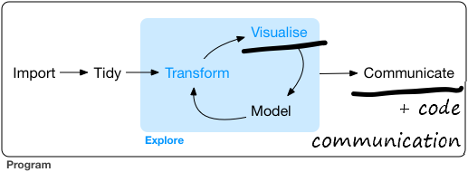

Rapid R Data Viz Book
2019-11-02
Chapter 1 Why read this?
1.1 Good data analysis starts with fast & intuitive EDA
Good Exploratory Data Analysis (EDA) is the foundation of most data work from data engineering to Kaggle Data Science competition winners.
Ideally, you can explore your data quickly and intuitively in a flow state absorbed by the patterns and stories your data reveals, not slowed by code errors and too many Google searches.
This book aims to help you explore data faster with fewer errors. But at the same time, to not compromise on code clarity and quality. Your quickly created code can still be made easy to read and re-use with only a few extra tweaks as you go along.
The following chapters provide a series of linked methods in a logical order. First we start with exploring and visualising data quickly before you commit to the intense process of polishing your final plot.
All the examples are aimed at beginners in R to those with an intermediate level of experince. However, even very experienced R users might pick up a new trick. And anyone could suggest an improvement or adddition to the book as an issue here(add link).
Each section starts with a bare bones code example with no bells or whistles. This means each method could become one of a collection of tools you could pick from for fast Exploratory Data Analysis.
After each simple code example a more complex version is provided in well structured code. The more detailed examples you could use as a template to adapt into publication quality plots.
The book is my current approach to data visualiation in R. But my methods keep changing and improving from reading R-Bloggers, #rstats daily, and learning from colleague’s work.
1.2 Is this Data Science?
This diagram is the Data Science workflow picture from R for Data Science. I’ve underlined the Visualise and Communicate parts of the Data Science process in R that this book seeks to help you with. I’ve also added code communication to emphasise the importance of well laid out code as another key part of communicating. Clear code is impotant both to anyone reading, re-using, or quality assuring your code. And it will help your future yourself when you have forgotten what you were trying to do.
Modelling is still an imporant part of your data exploration and understanding and part of the Data Science process well covered and described in the R 4 Data Science modelling chapter.
“The goal of a model is to provide a simple low-dimensional summary of a dataset. Ideally, the model will capture true “signals” (i.e. patterns generated by the phenomenon of interest), and ignore “noise” (i.e. random variation that you’re not interested in)."
Another good guide to that on the same data used in this book is here.

1.3 What about Python for data viz?
- Python is also a powerful coding language for data visualisation using packages like Pandas, Seaborn, Matplotlib, and Bokeh. My day to day work is usally limited to R so this is where I’ve built my data vis skills so far. A good place to find similar Python code examples to this book are the Python Notebooks on Kaggle. Use the filters at the top to select popular data visulisation notebooks in Python code and sort by the most votes.
1.4 What about Point and Click data vis tools?
- Graphical User Interface (GUI) or Point and Click (PaC) tools like Excel, PowerBI and Tableau still have their place in EDA, as long as we recognise their strengths and weaknesses in comparison to code. Hadley Wickham contrasts PaC tools vs code tools well in this interview.
Point-and-click interfaces are great, because they lay out all of your options in front of you, and you don’t have to remember anything. You can navigate through the set of pre-supplied options. And that’s also it’s greatest weakness, because first of all, you are constrained into what the developer thought you should be able to do. And secondly, because your primary interaction is with a mouse, it’s very difficult to record what you did. And I think that’s a problem for science, because ideally you want to say how you actually got these results. And then simply do that reliably and have other people critique you on that. But it’s also really hard when you are learning, because when you have a problem, how do you communicate that problem to someone else? You basically have to say, “I clicked here, then I clicked here, then I clicked here, and I did this.” Or you make a screen cast, and it’s just clunky.
So, the advantages of programming languages like R or Python, is that the primary mechanism for communicating with the computer is text. And that is scary because there’s nothing like this blinking cursory in front of you; it doesn’t tell you what to do next. But it means you are unconstrained, because you can do anything you can imagine. And you have all these advantages of text, where if you have a problem with your code, you can copy and paste it into an email, you can Google it, you can check it and put it on GitHub, or you can share it by Twitter. There’s just so many advantages to the fact that the primary way you relate with a programming language is through code, which is just text. And so, as long as you are doing data analysis fairly regularly, I think all the advantages outweigh a point and click interface like Stata.
1.5 Find an R master to inspire you
- This book is just one set of ideas in a certain style. It’s not a rigid formula you must follow. Seek ideas and inspiration from a variety of people and books. Find your own path in Data Science data exploration, visualsation and communication. Two people who have inspired me are David Robinson and Claus Wilke I describe below. I’ve also collected a series of R guides and galleries in a logic order I have found useful and inspiring.
1.5.1 David Robinson
David Robinson explores, cleans then analystes data in R rapidly and intuiviely. Precislye what I’m trying to help you do with this book. Several methods here I saw Robinson do first on his Tidy Tuesday live coding YouTube videos. I’d strongly reccomend watching any of his coding videos.
While this book covers the exploration, visualisation and communication parts of Data Science, Robinson’s Tidy Tuesday videos take you through the complete R for Data Sciecne workflow. From import to communicate. And all in one hour (or less if you increase the playback speed to 1.5x).
1.5.2 Claus Wilke
Another R master in data vis and communication is Claus Wilke. He recently created a guide similar to this book. It starts with simple examples that become more complex. In his Practical ggplot2 guide see how he starts with the bare minimum code you need to create the plot. He then gradually builds that code up layer by layer until it is publication quality.
Wilke wrote Practical ggplot2 to help readers of his Fundamentals of Data Visualization book re-create his charts more easily on their own data. So give them an easier to follow recipie. This book is similar to that style but with a greater focus on exploratory data analysis, and offering more tools than just ggplot, particulary for interactive plots, as well as reccomending a clean code style.